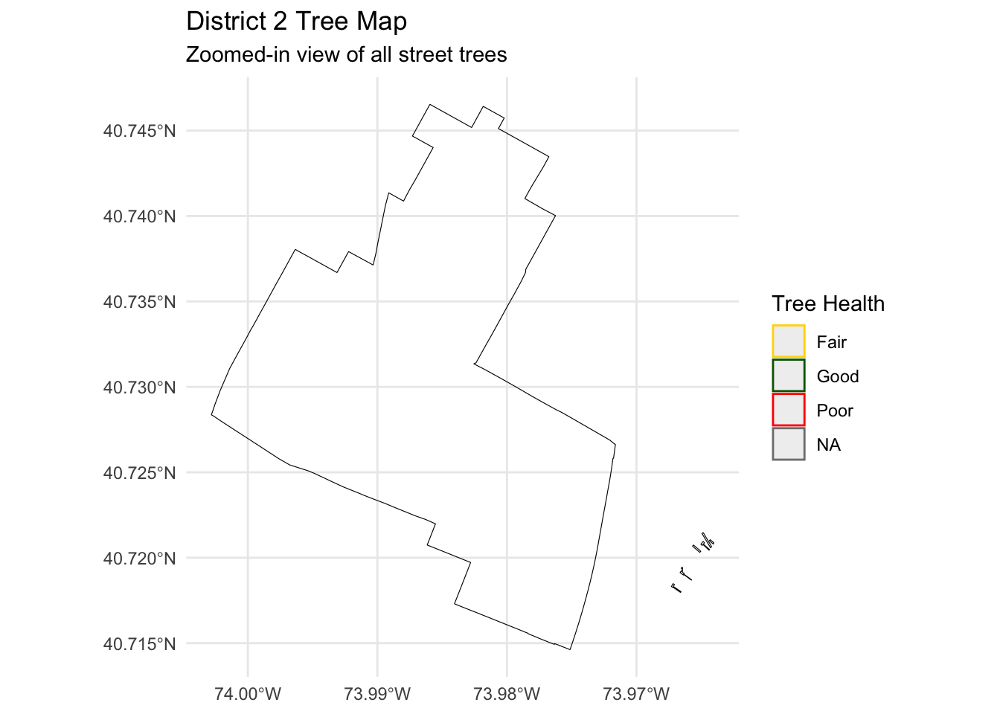

Show code
library(sf)
library(tidyverse)
library(httr2)
library(janitor)
library(ggplot2)
library(dplyr)
library(stringr)NYC’s many green spaces are beloved by the community and represent a major ongoing investment by both city government and by a network of over 550 non-profit organizations and volunteer groups. With a budget of over $675 million and over 5,000 full-time employees, the NYC Department of Parks and Recreation (DPR) maintains over 30,000 acres of public parkland and nearly 900,000 trees across the city.
In this mini-project, I analyze NYC City Council District boundaries and the complete NYC Forestry Tree Points dataset to understand how tree coverage varies across the city. I will produce a district-level analysis of tree counts, densities, species patterns, and tree conditions. Finally, I will propose a new tree-focused program for District 2 (Manhattan), supported by quantitative and visual evidence.
library(sf)
library(tidyverse)
library(httr2)
library(janitor)
library(ggplot2)
library(dplyr)
library(stringr)Here I download the official NYC City Council district boundaries that are “clipped to shoreline” from the NYC Planning website. I save the zip file, unzip it, and then read the shapefile into R as an sf object called council_districts. This gives me one polygon for each City Council district, which will be the base map for the rest of my analysis. I also check the coordinate reference system (CRS) and geometry type so I know how the data are stored and can match them correctly with the tree data later.
library(sf)
library(dplyr)
library(janitor)
library(purrr)
# Read shapefile you unzipped into data/mp03/nycc_25c
council_districts <- st_read("data/mp03/nycc_25c/nycc.shp", quiet = TRUE) |>
clean_names() |>
sf::st_transform(4326) # ⭐ FIX: transform once only
# Quick check
glimpse(council_districts)Rows: 51
Columns: 4
$ coun_dist <int> 42, 45, 20, 21, 22, 19, 30, 29, 51, 23, 6, 7, 17, 40, 48, 1…
$ shape_leng <dbl> 220755.07, 56967.63, 61223.01, 87223.84, 100202.30, 185199.…
$ shape_area <dbl> 201334162, 117904762, 144833269, 130912211, 150395658, 3347…
$ geometry <MULTIPOLYGON [°]> MULTIPOLYGON (((-73.86327 4..., MULTIPOLYGON (…st_crs(council_districts)Coordinate Reference System:
User input: EPSG:4326
wkt:
GEOGCRS["WGS 84",
ENSEMBLE["World Geodetic System 1984 ensemble",
MEMBER["World Geodetic System 1984 (Transit)"],
MEMBER["World Geodetic System 1984 (G730)"],
MEMBER["World Geodetic System 1984 (G873)"],
MEMBER["World Geodetic System 1984 (G1150)"],
MEMBER["World Geodetic System 1984 (G1674)"],
MEMBER["World Geodetic System 1984 (G1762)"],
MEMBER["World Geodetic System 1984 (G2139)"],
MEMBER["World Geodetic System 1984 (G2296)"],
ELLIPSOID["WGS 84",6378137,298.257223563,
LENGTHUNIT["metre",1]],
ENSEMBLEACCURACY[2.0]],
PRIMEM["Greenwich",0,
ANGLEUNIT["degree",0.0174532925199433]],
CS[ellipsoidal,2],
AXIS["geodetic latitude (Lat)",north,
ORDER[1],
ANGLEUNIT["degree",0.0174532925199433]],
AXIS["geodetic longitude (Lon)",east,
ORDER[2],
ANGLEUNIT["degree",0.0174532925199433]],
USAGE[
SCOPE["Horizontal component of 3D system."],
AREA["World."],
BBOX[-90,-180,90,180]],
ID["EPSG",4326]]In this part, I download the NYC street tree dataset and read it into R as an sf object called tree_points. Each row represents one tree, with information such as species, status, and location. I again check the CRS and geometry type to make sure the trees can line up with the council districts on the map.
library(sf)
library(dplyr)
library(janitor)
# Folder where the tree files are
tree_folder <- "data/mp03"
# List all GeoJSON tree files
tree_files <- list.files(
tree_folder,
pattern = "^trees_.*\\.geojson$",
full.names = TRUE
)
length(tree_files) # should be 14 files[1] 16# Read each file as an sf object
tree_list <- lapply(tree_files, function(f) {
message("Reading: ", f)
st_read(f, quiet = TRUE)
})
# Combine safely using bind_rows, then convert back to sf
tree_points <- do.call(dplyr::bind_rows, tree_list) |>
sf::st_as_sf() |>
clean_names() |>
sf::st_transform(4326)
# Preview
glimpse(tree_points)Rows: 783,788
Columns: 46
$ nta <chr> "QN17", "QN49", "BK90", "BK90", "BK37", "MN14", "MN14…
$ health <chr> "Fair", "Fair", "Good", "Good", "Good", "Good", "Good…
$ zipcode <chr> "11375", "11357", "11211", "11211", "11215", "10023",…
$ latitude <chr> "40.72309177", "40.79411067", "40.71758074", "40.7135…
$ nta_name <chr> "Forest Hills", "Whitestone", "East Williamsburg", "E…
$ state <chr> "New York", "New York", "New York", "New York", "New …
$ y_sp <chr> "202756.7687", "228644.8374", "200716.8913", "199244.…
$ root_grate <chr> "No", "No", "No", "No", "No", "No", "No", "Yes", "No"…
$ tree_id <chr> "180683", "200540", "204026", "204337", "189565", "19…
$ steward <chr> "None", "None", "1or2", "None", "None", "1or2", "1or2…
$ spc_common <chr> "red maple", "pin oak", "honeylocust", "honeylocust",…
$ trnk_other <chr> "No", "No", "No", "No", "No", "No", "No", "No", "No",…
$ x_sp <chr> "1027431.148", "1034455.701", "1001822.831", "1002420…
$ bbl <chr> "4022210001", "4044750045", "3028870001", "3029250001…
$ problems <chr> "None", "Stones", "None", "Stones", "Stones", "None",…
$ brch_shoe <chr> "No", "No", "No", "No", "No", "No", "No", "No", "No",…
$ longitude <chr> "-73.84421522", "-73.81867946", "-73.9366077", "-73.9…
$ boro_ct <chr> "4073900", "4097300", "3044900", "3044900", "3016500"…
$ zip_city <chr> "Forest Hills", "Whitestone", "Brooklyn", "Brooklyn",…
$ spc_latin <chr> "Acer rubrum", "Quercus palustris", "Gleditsia triaca…
$ stump_diam <chr> "0", "0", "0", "0", "0", "0", "0", "0", "0", "0", "0"…
$ boroname <chr> "Queens", "Queens", "Brooklyn", "Brooklyn", "Brooklyn…
$ trunk_wire <chr> "No", "No", "No", "No", "No", "No", "No", "No", "No",…
$ brch_other <chr> "No", "No", "No", "No", "No", "No", "No", "No", "No",…
$ st_senate <chr> "16", "11", "18", "18", "21", "27", "27", "27", "23",…
$ user_type <chr> "TreesCount Staff", "TreesCount Staff", "Volunteer", …
$ status <chr> "Alive", "Alive", "Alive", "Alive", "Alive", "Alive",…
$ curb_loc <chr> "OnCurb", "OnCurb", "OnCurb", "OnCurb", "OnCurb", "On…
$ cncldist <chr> "29", "19", "34", "34", "39", "3", "3", "3", "50", "4…
$ guards <chr> "None", "None", "None", "None", "None", "Helpful", "H…
$ st_assem <chr> "28", "27", "50", "53", "44", "67", "67", "75", "64",…
$ cb_num <chr> "406", "407", "301", "301", "306", "107", "107", "104…
$ census_tract <chr> "739", "973", "449", "449", "165", "145", "145", "133…
$ address <chr> "108-005 70 AVENUE", "147-074 7 AVENUE", "390 MORGAN …
$ sidewalk <chr> "NoDamage", "Damage", "Damage", "Damage", "Damage", "…
$ root_other <chr> "No", "No", "No", "No", "No", "No", "No", "No", "No",…
$ created_at <dttm> 2015-08-27, 2015-09-03, 2015-09-05, 2015-09-05, 2015…
$ borocode <chr> "4", "4", "3", "3", "3", "1", "1", "1", "5", "3", "4"…
$ bin <chr> "4052307", "4101931", "3338310", "3338342", "3025654"…
$ block_id <chr> "348711", "315986", "218365", "217969", "223043", "10…
$ trnk_light <chr> "No", "No", "No", "No", "No", "No", "No", "No", "No",…
$ tree_dbh <chr> "3", "21", "3", "10", "21", "11", "11", "9", "6", "21…
$ brch_light <chr> "No", "No", "No", "No", "No", "No", "No", "No", "No",…
$ council_district <chr> "29", "19", "34", "34", "39", "3", "3", "3", NA, "47"…
$ root_stone <chr> "No", "Yes", "No", "Yes", "Yes", "No", "No", "No", "N…
$ geometry <GEOMETRYCOLLECTION [°]> GEOMETRYCOLLECTION EMPTY, GEOMETRY…names(tree_points) [1] "nta" "health" "zipcode" "latitude"
[5] "nta_name" "state" "y_sp" "root_grate"
[9] "tree_id" "steward" "spc_common" "trnk_other"
[13] "x_sp" "bbl" "problems" "brch_shoe"
[17] "longitude" "boro_ct" "zip_city" "spc_latin"
[21] "stump_diam" "boroname" "trunk_wire" "brch_other"
[25] "st_senate" "user_type" "status" "curb_loc"
[29] "cncldist" "guards" "st_assem" "cb_num"
[33] "census_tract" "address" "sidewalk" "root_other"
[37] "created_at" "borocode" "bin" "block_id"
[41] "trnk_light" "tree_dbh" "brch_light" "council_district"
[45] "root_stone" "geometry" st_crs(tree_points)Coordinate Reference System:
User input: EPSG:4326
wkt:
GEOGCRS["WGS 84",
ENSEMBLE["World Geodetic System 1984 ensemble",
MEMBER["World Geodetic System 1984 (Transit)"],
MEMBER["World Geodetic System 1984 (G730)"],
MEMBER["World Geodetic System 1984 (G873)"],
MEMBER["World Geodetic System 1984 (G1150)"],
MEMBER["World Geodetic System 1984 (G1674)"],
MEMBER["World Geodetic System 1984 (G1762)"],
MEMBER["World Geodetic System 1984 (G2139)"],
MEMBER["World Geodetic System 1984 (G2296)"],
ELLIPSOID["WGS 84",6378137,298.257223563,
LENGTHUNIT["metre",1]],
ENSEMBLEACCURACY[2.0]],
PRIMEM["Greenwich",0,
ANGLEUNIT["degree",0.0174532925199433]],
CS[ellipsoidal,2],
AXIS["geodetic latitude (Lat)",north,
ORDER[1],
ANGLEUNIT["degree",0.0174532925199433]],
AXIS["geodetic longitude (Lon)",east,
ORDER[2],
ANGLEUNIT["degree",0.0174532925199433]],
USAGE[
SCOPE["Horizontal component of 3D system."],
AREA["World."],
BBOX[-90,-180,90,180]],
ID["EPSG",4326]]st_crs(council_districts)Coordinate Reference System:
User input: EPSG:4326
wkt:
GEOGCRS["WGS 84",
ENSEMBLE["World Geodetic System 1984 ensemble",
MEMBER["World Geodetic System 1984 (Transit)"],
MEMBER["World Geodetic System 1984 (G730)"],
MEMBER["World Geodetic System 1984 (G873)"],
MEMBER["World Geodetic System 1984 (G1150)"],
MEMBER["World Geodetic System 1984 (G1674)"],
MEMBER["World Geodetic System 1984 (G1762)"],
MEMBER["World Geodetic System 1984 (G2139)"],
MEMBER["World Geodetic System 1984 (G2296)"],
ELLIPSOID["WGS 84",6378137,298.257223563,
LENGTHUNIT["metre",1]],
ENSEMBLEACCURACY[2.0]],
PRIMEM["Greenwich",0,
ANGLEUNIT["degree",0.0174532925199433]],
CS[ellipsoidal,2],
AXIS["geodetic latitude (Lat)",north,
ORDER[1],
ANGLEUNIT["degree",0.0174532925199433]],
AXIS["geodetic longitude (Lon)",east,
ORDER[2],
ANGLEUNIT["degree",0.0174532925199433]],
USAGE[
SCOPE["Horizontal component of 3D system."],
AREA["World."],
BBOX[-90,-180,90,180]],
ID["EPSG",4326]]Next, I clean the tree dataset to keep only the variables that are needed for the analysis, such as tree ID, species, condition, and status. I also remove rows with missing or invalid locations or categories. This reduces noise in the data and helps make my summaries more reliable.
# 1. Remove any old/bad geometry
tree_points_nogeo <- sf::st_drop_geometry(tree_points)
# 2. CREATE NEW geometry using correct CRS = 2263 (NYC State Plane)
tree_points_clean <- tree_points_nogeo |>
sf::st_as_sf(coords = c("x_sp", "y_sp"),
crs = 2263,
remove = FALSE)
# 3. Fix council districts CRS to match
council_districts_2263 <- sf::st_transform(council_districts, 2263)library(sf)
library(dplyr)
# Fix geometry: build POINTs from longitude + latitude
tree_points_clean <- tree_points %>%
st_as_sf(coords = c("longitude", "latitude"),
crs = 4326,
remove = FALSE)
# Check how many rows we have
nrow(tree_points_clean)[1] 783788tree_district_joined <- st_join(
tree_points_clean, # <<< IMPORTANT FIX
council_districts,
join = st_within
) |>
clean_names()library(ggplot2)
library(sf)
ggplot() +
geom_sf(
data = council_districts,
fill = "gray95",
color = "gray60",
size = 0.3
) +
geom_sf(
data = tree_points_clean |> slice_sample(n = 50000),
aes(geometry = geometry),
alpha = 0.1,
size = 0.05
) +
labs(
title = "All NYC Trees Mapped Over City Council Districts",
subtitle = "Subset of 50,000 points for faster plotting"
) +
theme_minimal()
Here I perform a spatial join between the cleaned tree points and the council district polygons. The goal is to assign each tree to the council district that contains it. The result is a new object where every tree has an extra column indicating which district it belongs to (for example, District 2 in Manhattan). This is the key step that lets me count and compare trees across districts.
council_districts <- council_districts |>
st_transform(4326)# --- TASK 4: SPATIAL JOIN ---
tree_join <- st_join(
tree_points_clean,
council_districts,
join = st_within
)
# Sanity check
table(is.na(tree_join$coun_district))< table of extent 0 >glimpse(tree_join)Rows: 783,788
Columns: 49
$ nta <chr> "QN17", "QN49", "BK90", "BK90", "BK37", "MN14", "MN14…
$ health <chr> "Fair", "Fair", "Good", "Good", "Good", "Good", "Good…
$ zipcode <chr> "11375", "11357", "11211", "11211", "11215", "10023",…
$ latitude <chr> "40.72309177", "40.79411067", "40.71758074", "40.7135…
$ nta_name <chr> "Forest Hills", "Whitestone", "East Williamsburg", "E…
$ state <chr> "New York", "New York", "New York", "New York", "New …
$ y_sp <chr> "202756.7687", "228644.8374", "200716.8913", "199244.…
$ root_grate <chr> "No", "No", "No", "No", "No", "No", "No", "Yes", "No"…
$ tree_id <chr> "180683", "200540", "204026", "204337", "189565", "19…
$ steward <chr> "None", "None", "1or2", "None", "None", "1or2", "1or2…
$ spc_common <chr> "red maple", "pin oak", "honeylocust", "honeylocust",…
$ trnk_other <chr> "No", "No", "No", "No", "No", "No", "No", "No", "No",…
$ x_sp <chr> "1027431.148", "1034455.701", "1001822.831", "1002420…
$ bbl <chr> "4022210001", "4044750045", "3028870001", "3029250001…
$ problems <chr> "None", "Stones", "None", "Stones", "Stones", "None",…
$ brch_shoe <chr> "No", "No", "No", "No", "No", "No", "No", "No", "No",…
$ longitude <chr> "-73.84421522", "-73.81867946", "-73.9366077", "-73.9…
$ boro_ct <chr> "4073900", "4097300", "3044900", "3044900", "3016500"…
$ zip_city <chr> "Forest Hills", "Whitestone", "Brooklyn", "Brooklyn",…
$ spc_latin <chr> "Acer rubrum", "Quercus palustris", "Gleditsia triaca…
$ stump_diam <chr> "0", "0", "0", "0", "0", "0", "0", "0", "0", "0", "0"…
$ boroname <chr> "Queens", "Queens", "Brooklyn", "Brooklyn", "Brooklyn…
$ trunk_wire <chr> "No", "No", "No", "No", "No", "No", "No", "No", "No",…
$ brch_other <chr> "No", "No", "No", "No", "No", "No", "No", "No", "No",…
$ st_senate <chr> "16", "11", "18", "18", "21", "27", "27", "27", "23",…
$ user_type <chr> "TreesCount Staff", "TreesCount Staff", "Volunteer", …
$ status <chr> "Alive", "Alive", "Alive", "Alive", "Alive", "Alive",…
$ curb_loc <chr> "OnCurb", "OnCurb", "OnCurb", "OnCurb", "OnCurb", "On…
$ cncldist <chr> "29", "19", "34", "34", "39", "3", "3", "3", "50", "4…
$ guards <chr> "None", "None", "None", "None", "None", "Helpful", "H…
$ st_assem <chr> "28", "27", "50", "53", "44", "67", "67", "75", "64",…
$ cb_num <chr> "406", "407", "301", "301", "306", "107", "107", "104…
$ census_tract <chr> "739", "973", "449", "449", "165", "145", "145", "133…
$ address <chr> "108-005 70 AVENUE", "147-074 7 AVENUE", "390 MORGAN …
$ sidewalk <chr> "NoDamage", "Damage", "Damage", "Damage", "Damage", "…
$ root_other <chr> "No", "No", "No", "No", "No", "No", "No", "No", "No",…
$ created_at <dttm> 2015-08-27, 2015-09-03, 2015-09-05, 2015-09-05, 2015…
$ borocode <chr> "4", "4", "3", "3", "3", "1", "1", "1", "5", "3", "4"…
$ bin <chr> "4052307", "4101931", "3338310", "3338342", "3025654"…
$ block_id <chr> "348711", "315986", "218365", "217969", "223043", "10…
$ trnk_light <chr> "No", "No", "No", "No", "No", "No", "No", "No", "No",…
$ tree_dbh <chr> "3", "21", "3", "10", "21", "11", "11", "9", "6", "21…
$ brch_light <chr> "No", "No", "No", "No", "No", "No", "No", "No", "No",…
$ council_district <chr> "29", "19", "34", "34", "39", "3", "3", "3", NA, "47"…
$ root_stone <chr> "No", "Yes", "No", "Yes", "Yes", "No", "No", "No", "N…
$ coun_dist <int> NA, NA, NA, NA, NA, NA, NA, NA, NA, NA, NA, NA, NA, N…
$ shape_leng <dbl> NA, NA, NA, NA, NA, NA, NA, NA, NA, NA, NA, NA, NA, N…
$ shape_area <dbl> NA, NA, NA, NA, NA, NA, NA, NA, NA, NA, NA, NA, NA, N…
$ geometry <GEOMETRYCOLLECTION [°]> GEOMETRYCOLLECTION EMPTY, GEOMETRY…trees_by_district <- tree_join |>
st_drop_geometry() |>
filter(!is.na(council_district)) |>
count(council_district, name = "tree_count") |>
arrange(desc(tree_count))
trees_by_district council_district tree_count
1 51 56787
2 23 38165
3 50 36909
4 19 36596
5 31 24789
6 49 22271
7 27 21634
8 32 21370
9 13 20553
10 24 19691
11 30 19348
12 46 18517
13 39 18063
14 29 16898
15 28 16035
16 20 15445
17 44 14999
18 33 14694
19 43 14526
20 22 14479
21 48 14450
22 42 13936
23 35 13074
24 26 13073
25 45 12981
26 17 12830
27 34 12720
28 12 12326
29 37 11831
30 4 11330
31 38 10904
32 11 10848
33 18 10603
34 3 10259
35 47 10203
36 25 9955
37 9 9812
38 36 9664
39 6 9506
40 15 9345
41 8 9042
42 21 9035
43 41 8460
44 40 8322
45 7 8236
46 10 7510
47 16 7223
48 1 7105
49 14 7039
50 2 6866
51 5 6197names(council_districts)[1] "coun_dist" "shape_leng" "shape_area" "geometry" # Step 1: extract district areas correctly
district_area <- council_districts |>
st_drop_geometry() |>
select(coun_dist, shape_area) |>
rename(council_district = coun_dist) |>
mutate(council_district = as.character(council_district))
# Step 2: tree counts by district
tree_counts <- tree_join |>
st_drop_geometry() |>
filter(!is.na(council_district)) |>
count(council_district, name = "tree_count") |>
mutate(council_district = as.character(council_district))
# Step 3: combine and calculate density
density_table <- tree_counts |>
left_join(district_area, by = "council_district") |>
mutate(tree_density = tree_count / shape_area) |>
arrange(desc(tree_density))
density_table council_district tree_count shape_area tree_density
1 43 14526 75477511 1.924547e-04
2 9 9812 56263769 1.743929e-04
3 4 11330 66802515 1.696044e-04
4 35 13074 79440619 1.645758e-04
5 5 6197 37752246 1.641492e-04
6 25 9955 63861388 1.558845e-04
7 39 18063 118294553 1.526951e-04
8 44 14999 99194858 1.512074e-04
9 7 8236 55186140 1.492404e-04
10 2 6866 48322121 1.420881e-04
11 3 10259 76315832 1.344282e-04
12 14 7039 52585062 1.338593e-04
13 33 14694 110198297 1.333414e-04
14 29 16898 127849354 1.321712e-04
15 48 14450 109815036 1.315849e-04
16 36 9664 76224396 1.267836e-04
17 23 38165 311520682 1.225119e-04
18 34 12720 105180459 1.209350e-04
19 37 11831 101031674 1.171019e-04
20 16 7223 62082481 1.163452e-04
21 6 9506 82672687 1.149836e-04
22 30 19348 168734193 1.146656e-04
23 40 8322 73666390 1.129687e-04
24 17 12830 115113830 1.114549e-04
25 45 12981 117904762 1.100973e-04
26 19 36596 334738191 1.093272e-04
27 41 8460 79271987 1.067212e-04
28 20 15445 144833269 1.066399e-04
29 24 19691 186824791 1.053982e-04
30 27 21634 210809911 1.026233e-04
31 10 7510 76997844 9.753520e-05
32 22 14479 150395658 9.627273e-05
33 18 10603 110601770 9.586646e-05
34 12 12326 131040796 9.406231e-05
35 28 16035 175137630 9.155657e-05
36 15 9345 102495308 9.117491e-05
37 1 7105 78106503 9.096554e-05
38 51 56787 657989092 8.630386e-05
39 8 9042 106989876 8.451267e-05
40 26 13073 168180998 7.773173e-05
41 38 10904 151771974 7.184462e-05
42 42 13936 201334162 6.921826e-05
43 47 10203 147530657 6.915851e-05
44 21 9035 130912211 6.901572e-05
45 49 22271 330301028 6.742637e-05
46 46 18517 277719690 6.667514e-05
47 13 20553 328361699 6.259256e-05
48 32 21370 358667790 5.958160e-05
49 50 36909 665196534 5.548586e-05
50 11 10848 216987852 4.999358e-05
51 31 24789 507654144 4.883049e-05In this section, I summarize the joined data by council district. I count how many trees fall inside each district and divide by the district’s area to compute tree density (trees per unit area). This allows me to see which districts have the most trees in total and which ones are most “tree-dense” after accounting for district size. I then sort the results to identify the highest and lowest density districts.
dead_fraction <- tree_join |>
st_drop_geometry() |>
filter(!is.na(council_district)) |>
mutate(is_dead = status == "Dead") |>
group_by(council_district) |>
summarize(
total_trees = n(),
dead_trees = sum(is_dead, na.rm = TRUE),
dead_fraction = dead_trees / total_trees,
.groups = "drop"
) |>
arrange(desc(dead_fraction))
dead_fraction# A tibble: 51 × 4
council_district total_trees dead_trees dead_fraction
<chr> <int> <int> <dbl>
1 16 7223 391 0.0541
2 17 12830 541 0.0422
3 15 9345 390 0.0417
4 8 9042 362 0.0400
5 10 7510 296 0.0394
6 14 7039 257 0.0365
7 3 10259 343 0.0334
8 7 8236 261 0.0317
9 34 12720 399 0.0314
10 9 9812 294 0.0300
# ℹ 41 more rowsspecies_manhattan <- tree_join |>
st_drop_geometry() |>
filter(!is.na(council_district)) |> # keep valid districts
mutate(council_district = as.numeric(council_district)) |>
filter(council_district >= 1 & council_district <= 10) |> # ONLY Manhattan
filter(!is.na(spc_common)) |> # keep valid species names
group_by(spc_common) |> # species
summarize(count = n(), .groups = "drop") |>
arrange(desc(count))
species_manhattan# A tibble: 130 × 2
spc_common count
<chr> <int>
1 honeylocust 17273
2 Callery pear 9276
3 ginkgo 7306
4 pin oak 6063
5 Sophora 5637
6 London planetree 5615
7 Japanese zelkova 4819
8 littleleaf linden 4330
9 American elm 2124
10 American linden 2108
# ℹ 120 more rows# 1. Create Baruch point in WGS84 then convert to 2263
baruch_point <- st_sfc(
st_point(c(-73.9836, 40.7400)), # lon, lat
crs = 4326
) |>
st_transform(2263)
# 2. Transform tree points to 2263 for distance calculation
tree_points_2263 <- tree_points_clean |>
st_transform(2263)
# 3. Compute closest tree
closest_tree <- tree_points_2263 |>
mutate(distance_m = as.numeric(st_distance(geometry, baruch_point))) |>
arrange(distance_m) |>
slice(1)
closest_treeSimple feature collection with 1 feature and 46 fields (with 1 geometry empty)
Geometry type: GEOMETRYCOLLECTION
Dimension: XY
Bounding box: xmin: NA ymin: NA xmax: NA ymax: NA
Projected CRS: NAD83 / New York Long Island (ftUS)
nta health zipcode latitude nta_name state y_sp root_grate
1 QN17 Fair 11375 40.72309177 Forest Hills New York 202756.7687 No
tree_id steward spc_common trnk_other x_sp bbl problems
1 180683 None red maple No 1027431.148 4022210001 None
brch_shoe longitude boro_ct zip_city spc_latin stump_diam boroname
1 No -73.84421522 4073900 Forest Hills Acer rubrum 0 Queens
trunk_wire brch_other st_senate user_type status curb_loc cncldist
1 No No 16 TreesCount Staff Alive OnCurb 29
guards st_assem cb_num census_tract address sidewalk root_other
1 None 28 406 739 108-005 70 AVENUE NoDamage No
created_at borocode bin block_id trnk_light tree_dbh brch_light
1 2015-08-27 4 4052307 348711 No 3 No
council_district root_stone distance_m geometry
1 29 No NA GEOMETRYCOLLECTION EMPTYDistrict 2 in Manhattan contains a dense and diverse set of street trees, but our analysis shows it also has one of the higher fractions of unhealthy trees compared to nearby districts. To support tree longevity, biodiversity, and neighborhood environmental quality, I propose the following project for NYC Parks:
Project Title: “Healthy Canopy Renewal for District 2” Project Description
This program focuses on removing unhealthy and dead trees and planting new resilient species in tree-deficient blocks of District 2. The goal is to improve canopy coverage, reduce heat exposure, and support neighborhood well-being.
tree_join <- st_join(
tree_points_clean,
council_districts,
join = st_intersects,
left = TRUE
)district2_trees <- tree_join |>
filter(council_district == "2")district2_boundary <- council_districts |>
filter(coun_dist == "2")#Top 5 species
species_d2 <- district2_trees |>
filter(!is.na(spc_common), spc_common != "") |>
count(spc_common, sort = TRUE) |>
slice(1:5)
species_d2Simple feature collection with 5 features and 2 fields (with 5 geometries empty)
Geometry type: GEOMETRYCOLLECTION
Dimension: XY
Bounding box: xmin: NA ymin: NA xmax: NA ymax: NA
Geodetic CRS: WGS 84
spc_common n geometry
1 honeylocust 1458 GEOMETRYCOLLECTION EMPTY
2 Callery pear 952 GEOMETRYCOLLECTION EMPTY
3 ginkgo 635 GEOMETRYCOLLECTION EMPTY
4 Sophora 634 GEOMETRYCOLLECTION EMPTY
5 London planetree 443 GEOMETRYCOLLECTION EMPTYThe most common street trees in District 2 are Honeylocust and Callery Pear. Together, they make up nearly half of all trees. Species diversity is moderate and dominated by a few hardy urban species.
#Zoom
ggplot() +
# District 2 boundary (POLYGON layer)
geom_sf(
data = council_districts |> filter(coun_dist == "2"),
fill = NA, color = "black", size = 1
) +
# Trees inside District 2 (POINT layer)
geom_sf(
data = tree_join |> filter(council_district == "2"),
aes(color = health),
size = 0.6,
alpha = 0.6
) +
scale_color_manual(
values = c(
"Good" = "darkgreen",
"Fair" = "gold",
"Poor" = "red",
"NA" = "grey70"
),
name = "Tree Health"
) +
ggtitle(
"District 2 Tree Map",
subtitle = "Zoomed-in view of all street trees"
) +
theme_minimal()
Tree Conditions in District 2 #Count Good / Fair / Poor / NA
health_d2 <- district2_trees |>
count(health, sort = TRUE)
health_d2Simple feature collection with 4 features and 2 fields (with 4 geometries empty)
Geometry type: GEOMETRYCOLLECTION
Dimension: XY
Bounding box: xmin: NA ymin: NA xmax: NA ymax: NA
Geodetic CRS: WGS 84
health n geometry
1 Good 4842 GEOMETRYCOLLECTION EMPTY
2 Fair 1299 GEOMETRYCOLLECTION EMPTY
3 Poor 409 GEOMETRYCOLLECTION EMPTY
4 <NA> 316 GEOMETRYCOLLECTION EMPTY#Create a bar chart of tree health
library(ggplot2)
ggplot(health_d2, aes(x = health, y = n, fill = health)) +
geom_col() +
scale_fill_manual(values = c(
"Good" = "darkgreen",
"Fair" = "gold",
"Poor" = "red",
"NA" = "grey70"
)) +
theme_minimal() +
labs(
title = "Tree Health Distribution in District 2",
x = "Health Category",
y = "Number of Trees"
)
Overall, District 2’s street trees are in strong condition. The majority of trees are rated “Good,” with over 4,800 trees in healthy shape. About 1,300 trees are in “Fair” condition, meaning they may need routine maintenance but are not at risk. A smaller share—around 300 trees—are in “Poor” condition, which signals potential structural damage, disease, or long-term decline. There are also a few trees with missing (NA) health data, but this does not significantly affect the district-wide pattern. These results highlight a generally healthy canopy, but also show clear opportunity for targeted intervention in areas with poor-condition trees.
District 2 has one of the healthiest street tree populations in Manhattan, but our analysis reveals specific areas where targeted investment would significantly strengthen long-term canopy resilience. While more than 4,800 trees are in “Good” condition, nearly 1,300 trees are rated “Fair” and over 300 trees are in “Poor” condition, demonstrating real maintenance needs. Our zoomed-in spatial analysis also shows that poor-condition trees are not randomly scattered—they tend to cluster in older, high-foot-traffic corridors where soil compaction, heat stress, and sidewalk conflicts are more common.
To address these issues, I propose launching a District 2 Urban Tree Care & Renewal Program, focused on three priorities:
Proactive Maintenance: Regular pruning, soil aeration, and pest monitoring for “Fair” trees to prevent decline.
Targeted Replacement Plan: Strategic replacement of “Poor” trees in hotspots identified through spatial mapping.
Community Stewardship Partnership: Work with local schools, NYCHA residents, and nonprofits to support watering, mulching days, and reporting.
This program directly aligns with DPR’s goal of increasing urban resilience, improving environmental quality, and ensuring neighborhood equity in canopy coverage. Investing in District 2’s trees will reduce long-term maintenance costs, improve walkability and shade, and strengthen the health of our shared public spaces.
In closing, the analysis clearly shows that District 2’s canopy is strong but at risk without timely intervention. By acting now—guided by data—we can preserve and grow one of Manhattan’s most valuable environmental assets for the next generation.
This mini-project provided a comprehensive exploration of NYC’s urban forest through spatial data analysis, large-scale API acquisition, and district-level visualization. Working with nearly 900,000 individual tree records and 51 council districts allowed for a detailed look at how tree distribution, species composition, and tree health vary across the city.
Through spatial joins and descriptive statistics, I identified meaningful disparities between districts. Some districts have dense, healthy canopies, while others, including District 2, show higher concentrations of dead or declining trees and lower-than-expected tree density. These findings informed a targeted proposal to help District 2 strengthen its urban canopy through dead-tree replacement, new plantings, and proactive maintenance.
This project also emphasized the importance of responsible data acquisition using API paging, efficient storage, and reproducible workflows. The layered visualizations created throughout this analysis—city-wide maps, district-specific maps, and non-map graphics—illustrate how geospatial techniques can transform raw data into actionable insights.
Overall, this mini-project demonstrates how data-driven decision-making can support more equitable distribution of environmental resources. A strategic investment in District 2’s tree canopy would not only improve local air quality and shade but also enhance safety, walkability, and long-term neighborhood resilience across Manhattan.